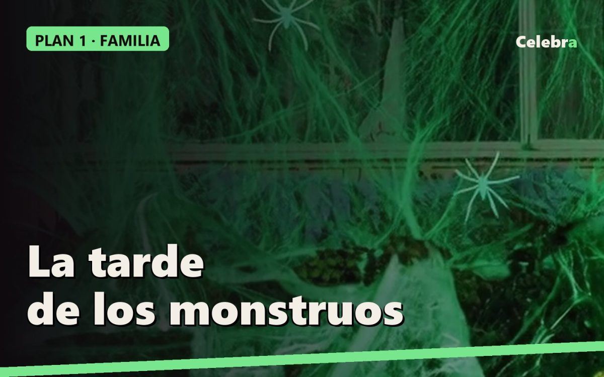

Plan 1 · Halloween en familia (de 4 a 10 años): la tarde de los monstruos

Este plan es para una casa con niños de entre 4 y 10 años, dos o tres familias juntas, y termina a una hora en la que todos duermen. La regla: miedo de mentira, nunca de verdad. Todo lo que se pone se puede tocar, y ningún adulto sale de un armario.
Horario
- 17:00 Llegan disfrazados. Foto de grupo en la entrada, con la luz todavía de día.
- 17:15 Taller: decorar galletas de fantasma o pintar calabazas pequeñas. Mantiene a todos sentados media hora.
- 17:45 Juegos (abajo).
- 18:45 Merienda-cena.
- 19:30 Truco o trato por la escalera o por el pasillo, con la luz baja.
- 20:00 Película con mantas.
- 21:30 A casa.
Qué poner y dónde
- La entrada es lo primero que ven: Telaraña que brilla en la oscuridad">telaraña que brilla en la oscuridad sobre el marco de la puerta y dos arañas de plástico grandes. De día es blanca; cuando bajéis la luz para el truco o trato, brilla en verde y es el momento estrella de la tarde.
- El pasillo: guirnalda de calabazas de papel (la hacen los niños en el taller) y velas LED en el suelo pegadas a la pared.
- El sofá: el esqueleto articulado sentado con un bol de caramelos en las manos. Los niños le hablan, le cambian la pose, se hacen fotos con él. Es el "invitado" de la fiesta.
- La mesa: mantel negro de plástico, platos y vasos naranjas, servilletas con murciélagos. Un caldero (o una olla negra) lleno de caramelos en el centro.
Nada de sangre falsa ni máscaras realistas. Con esta edad, lo que da miedo de verdad se recuerda mal.
Tres disfraces
- Fantasma clásico: sábana blanca vieja con dos agujeros. Diez minutos y es el que más gracia hace en la foto.
- Bruja o mago: ropa negra, sombrero de bazar y una escoba. Vale para niño y niña.
- Ángel: para la que no quiere dar miedo. Ropa blanca y alas de ángel con aureola; sirve también para el carnaval de febrero.
Para los adultos: una diadema de orejas de gato, un sombrero de bruja o nada. Los protagonistas son ellos.
Juegos (45 minutos)
- La momia (10 min): por parejas, un rollo de papel higiénico, envolver al compañero. Gana la momia más completa.
- Búsqueda de arañas a oscuras (15 min): diez arañas de plástico escondidas, luz apagada, una linterna por equipo. El equipo con más arañas elige la película.
- Estatuas de Thriller (10 min): suena la música, todos bailan; se para, todos quietos como zombis. El que se mueve, fuera.
- El esqueleto dice (10 min): un adulto pone voz al esqueleto del sofá y da órdenes tipo "Simón dice".
Merienda-cena (sin cocinar)
- Dedos de bruja: salchichas cocidas con una almendra clavada en la punta y un toque de kétchup.
- Plátanos fantasma: medio plátano con dos pepitas de chocolate como ojos.
- Mandarinas calabaza: una mandarina pelada con un trocito de apio como rabo.
- Pizza con cara de calabaza: aceitunas negras para los ojos y la boca.
- "Sangre de vampiro": zumo de frutos rojos en vasos transparentes.
- Chocolatinas y caramelos en el caldero, para el truco o trato.
Música
This Is Halloween, Monster Mash, Ghostbusters, Spooky Scary Skeletons, la banda sonora de Hotel Transilvania y Thriller para el juego de las estatuas. Volumen bajo durante la merienda.
Película
Hotel Transilvania (desde 6 años) o Pesadilla antes de Navidad (desde 6). Si son mayores de 9, Los Cazafantasmas. Luz apagada, la telaraña brillando en la entrada y mantas.
Lista de la compra
| Qué | Dónde | |---|---| | Telaraña que brilla en la oscuridad | tienda Celebra | | Esqueleto articulado | tienda Celebra | | Alas de ángel con aureola (disfraz) | tienda Celebra | | Mantel negro, platos y vasos naranjas, servilletas | bazar o supermercado | | Arañas de plástico (bolsa de 20), velas LED, sombrero de bruja | bazar | | Caramelos, chocolatinas, salchichas, plátanos, mandarinas, zumo, pizza | supermercado | | Papel higiénico para la momia, linternas | en casa |
Presupuesto orientativo sin contar la decoración de Celebra: 30-40 euros para tres familias.